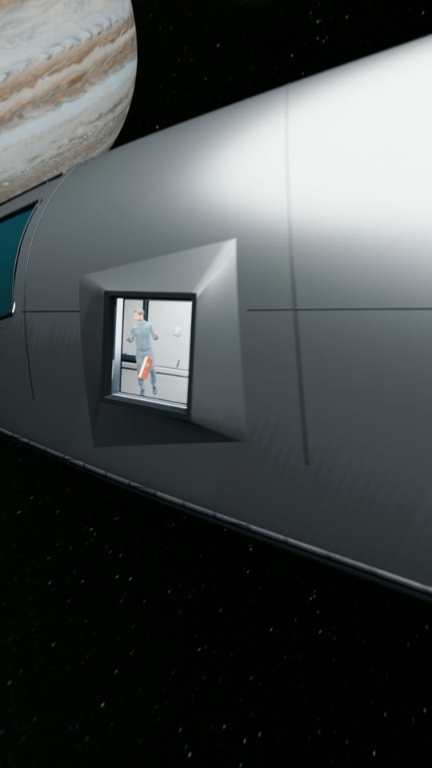
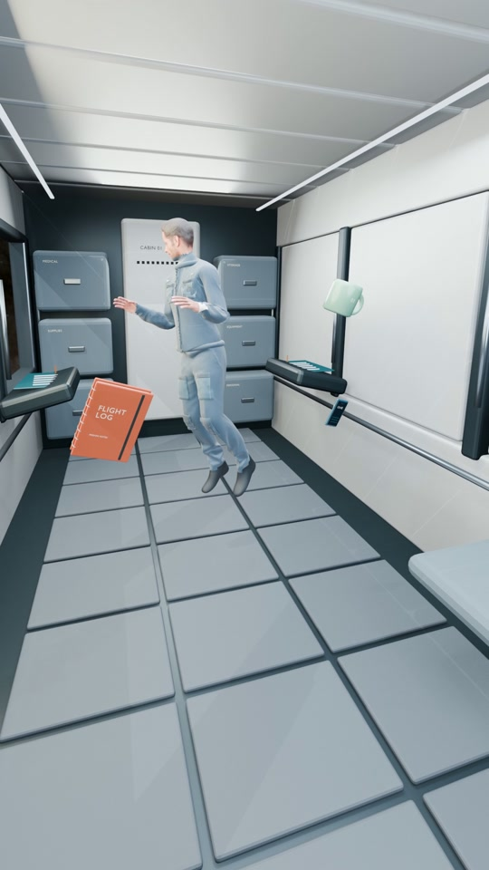
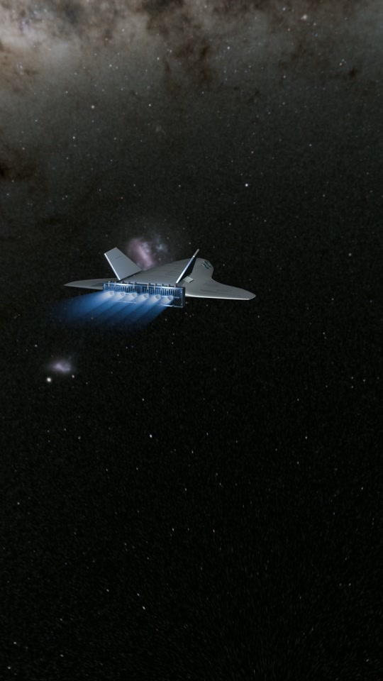

우주선의 궤도가 휘어집니다
목성의 중력은 우주선뿐 아니라 그 안의 사람과 컵에도 작용합니다. 이들은 목성 쪽으로 가속되며 함께 지나갑니다.
관찰하는 것: 목성에 대한 속도와 방향
밖에서는 우주선의 방향이 바뀝니다. 안에서는 사람과 컵이 천천히 떠다닙니다. 두 장면을 연결하는 단어는 자유낙하입니다.
· 3D 영상과 심화 해설
같은 여행, 두 개의 시선
엔진을 끈 우주선이 목성을 향해 다가갑니다. 창문을 통과해 선실로 들어가면, 사람과 생활 물건도 함께 움직이고 있습니다.
앞 72초는 무동력 구간입니다. 마지막 6초는 엔진을 사용하는 상황을 구분해 보여 줍니다.
관측자가 비교하는 대상이 달라지면 같은 운동도 다르게 보입니다.
목성의 중력은 우주선뿐 아니라 그 안의 사람과 컵에도 작용합니다. 이들은 목성 쪽으로 가속되며 함께 지나갑니다.
관찰하는 것: 목성에 대한 속도와 방향
사람과 선실이 거의 같은 중력가속도로 움직이면, 바닥이 몸을 계속 받칠 필요가 없습니다. 처음에 준 작은 상대속도와 회전은 남아 있습니다.
관찰하는 것: 선실에 대한 상대운동과 접촉 힘
자유낙하에서는 우주선과 내용물이 함께 움직입니다. 이 차이는 NASA의 미세중력 해설에서도 설명합니다.
위쪽을 양의 방향으로 잡으면, 사람에게 작용하는 중력과 바닥의 수직항력은 다음처럼 쓸 수 있습니다.
바닥에 서서 가속하지 않을 때는 a = 0이므로 N = mg입니다. 함께 자유낙하하면 a = −g이므로 N = 0입니다. 중력 mg가 없어지는 것이 아니라, 몸을 받치는 힘 N이 없어집니다. 접촉식 체중계가 직접 받는 힘도 N입니다.
선실과 컵의 상대가속도는 대략 g(컵 위치) − g(선실 위치)입니다. 작은 선실에서 이 차이를 무시할 수 있고 접촉·추진이 없다면 거의 0입니다. 그래서 목성 기준으로는 가속하면서도 선실 안에서는 느리게 떠다닐 수 있습니다.
장면을 선택하면 영상의 해당 시점부터 다시 볼 수 있습니다.

엔진은 꺼져 있어도 중력은 작용합니다. 창밖의 궤도 변화와 내부의 상태를 이어 봅니다.

사람은 창밖을 보며 천천히 자세를 바꿉니다. 물건은 공중에 멈춰 고정된 것이 아닙니다.

이제 엔진이 기체를 밀어 줍니다. 앞부분의 무동력 자유낙하와 다른 조건입니다.
‘무엇에 대한 속력인가’를 먼저 정해야 합니다.
엔진·공기저항을 무시하는 목성 중심의 2체 모형에서는, 충분히 먼 곳의 진입·이탈 속력은 같습니다. 목성에 가까워질 때 빨라졌다가 멀어지며 다시 느려집니다. 크게 달라지는 것은 속도 벡터의 방향입니다.
목성도 태양 주위를 공전합니다. 목성에 대한 우주선 속도에 목성의 공전 속도를 벡터로 더하면, 태양 기준의 속력이 달라질 수 있습니다. 비행 방향에 따라 에너지를 얻거나 잃습니다.
이때 우주선이 얻는 에너지는 행성의 공전 운동과 교환됩니다. 에너지가 무에서 만들어지는 것은 아닙니다. 영상의 마지막 가속은 별도로 켠 엔진에 의한 연출입니다.
관측 기준에 따른 속도 벡터와 에너지 교환은 NASA의 A Gravity Assist Primer를 참고하세요.
μ = GM은 목성의 중력 매개변수, r은 목성 중심에서의 거리, ε는 우주선의 단위 질량당 역학적 에너지입니다. 두 시점의 r이 같으면 이 식으로부터 속력 v도 같다는 것을 알 수 있습니다. 속도 방향까지 같다는 뜻은 아닙니다.
목성의 공전 속도 V를 근접 통과 동안 일정하게 놓고 태양 기준 운동에너지 차이를 전개하면, 단위 질량당 변화는 ΔK = V · (u나감 − u들어옴)입니다. |u나감| = |u들어옴|이어도 방향이 달라지면 이 내적은 0이 아닐 수 있습니다.
떠 있는 모습과 실제 중력, 영상의 연출을 구분해서 생각해 봅니다.
자동차는 도로가 바퀴를 밀고, 차체가 사람을 밀어 방향을 바꿉니다. 여기서는 중력이 우주선과 사람 모두의 운동을 함께 바꿉니다. 몸을 강하게 미는 좌석이나 벽이 없어도 궤도가 휘어질 수 있습니다.
단, 선실이 빠르게 회전하거나 엔진이 작동하면 상대운동은 달라집니다. 창밖이 빠르게 움직인다고 언제나 몸이 큰 접촉 힘을 받는 것은 아닙니다.
둥둥 뜬다는 사실만으로는 그렇게 결론 낼 수 없습니다. 창밖에서 궤도가 휘는 모습은 중력이 작용한다는 단서입니다. 선실 안에서도 충분히 정밀하게 측정하면 위치별 중력 차이, 즉 조석 효과가 드러날 수 있습니다.
놓는 순간의 작은 상대속도와 회전이 남아 있기 때문입니다. 접촉·공기 흐름·중력 차이를 무시하면, 물건은 스스로 감속해 공중에 정지하지 않습니다. 영상에서는 느린 이동과 회전으로 이 점을 표현했습니다.
엔진은 먼저 우주선에 추진력을 줍니다. 떠 있는 물건은 기체와 똑같이 가속하지 않으므로, 선실을 기준으로 뒤쪽으로 움직일 수 있습니다. 좌석이나 바닥이 사람을 밀면 무게감도 생깁니다. 영상에서는 이 조건의 변화를 자막으로 알리고 외부 모습만 보여 줍니다.
이번 제작에 사용한 이상화된 쌍곡선의 점근 편향각은 170도입니다. 정확한 180도가 아닙니다. 가까운 구간의 영상만 보고 먼 곳에서의 진입·이탈 방향을 곧바로 비교해서도 안 됩니다.
2체 쌍곡선에서 편향각은 δ = 2 arcsin(1/e)이며, 이심률 e > 1이므로 δ < 180°입니다. 특정 임무의 안전한 접근 거리나 실제 비행 시간을 설계한 영상은 아닙니다.
목성 기준으로는 선실도 함께 그쪽으로 가속됩니다. 선실을 고정된 바닥처럼 생각하면 혼동하기 쉽습니다. 다만 선실의 각 위치에서 중력은 완전히 같지는 않습니다. 이 영상은 작은 선실에서 그 차이가 작다는 근사로 내부 움직임을 표현했습니다.
영상에 보이는 장면과 계산으로 설명하는 범위를 함께 남깁니다.
Blender의 3D 모델과 카메라 애니메이션으로 만들었습니다. 금속 기체와 정렬된 창문, 헬멧 없이 입는 선내용 비행복, 수첩의 제본과 컵의 유약 같은 세부를 보강했습니다. 선실에서는 창밖을 보는 자세와 느린 비대칭 동작을, 마지막에는 후방 카메라가 우주선에 뒤처지는 모습을 사용했습니다.
무동력 궤도는 목성 중심의 2체 쌍곡선입니다. 78초는 편집된 상영 시간이며 실제 비행 시간이 아닙니다. 기체의 표시 크기·접근 장면·목성 대기의 움직임은 이해와 화면 구성을 위한 연출입니다.
선실의 움직임은 리깅과 애니메이션으로 조절했습니다. 모든 물체의 충돌을 푸는 물리 시뮬레이션이나 실제 우주비행사의 기록 영상은 아닙니다. 마지막 엔진 분사도 유체 해석 결과가 아닌 시각적 표현입니다. 별빛과 은하수는 시인성을 조정했고, 효과음은 진공에서 소리가 전달된다는 뜻이 아닙니다.
제작본: 1080 × 1920, 초당 24프레임, 78초. 사용자 녹음과 Gemini 음악 The Anatomy of Stillness를 사용했습니다.
엔진을 껐는데, 왜 방향이 바뀔까요? 목성의 중력이 우주선을 끌어당깁니다. 사람도, 컵도, 수첩도 선실 안에 떠 있습니다. 중력이 사라진 걸까요?
그렇게 보여도 중력은 작용하고 있습니다. 우주선·사람·물체가 함께 자유낙하하는 중입니다. 모두 같이 움직이니 서로 떠 있는 것처럼 보이죠. 몸을 받쳐 주는 힘을 거의 느끼지 못합니다.
다시 밖에서 보면 중력이 만든 변화가 보입니다. 우주선의 궤도는 목성 쪽으로 휘어집니다. 목성을 돌아 나온 우주선은 다른 방향으로 떠납니다. 떠 있어도 중력은 작용합니다.
마지막 장면: 자유낙하 종료, 엔진 점화. 이제 추진력으로 더 빠르게 떠납니다.
화면에 표시된 핵심 자막입니다. 녹음의 모든 문장을 옮긴 전사본은 아닙니다. 핵심 자막 SRT